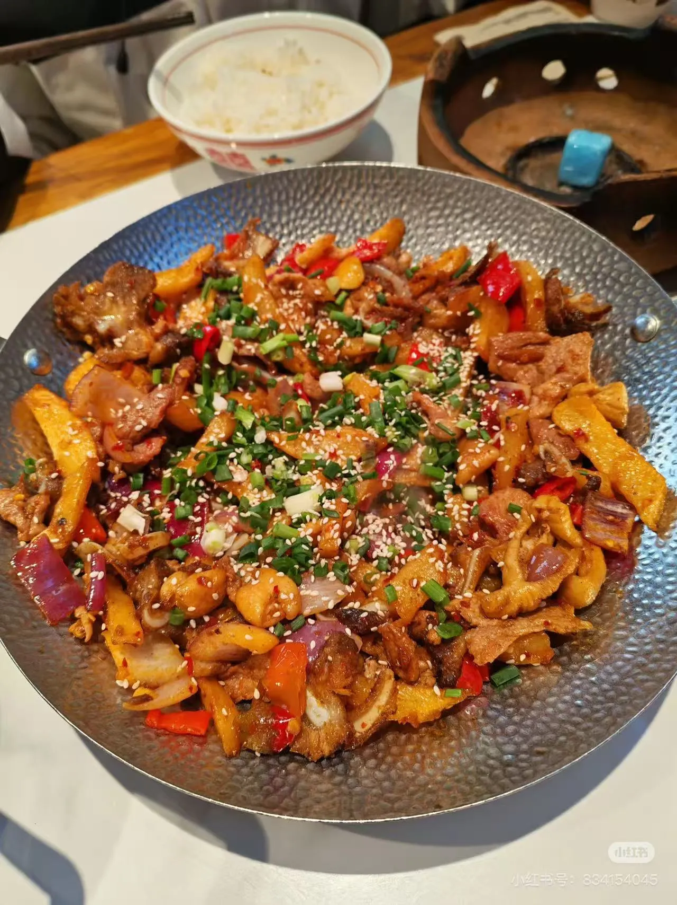

🏆 #1 Must-Try Lunch / Dinner
李憨憨三下锅
Li Hanhan's Three-Pot Stew
三下锅 (Sān Xià Guō) — Zhangjiajie's signature dish. A sizzling dry wok of smoked pork belly, tripe, and fresh meat in a bold, spicy-fragrant sauce. The smokiness from the cured meat is unforgettable. Li Hanhan's version is beloved for its generous portions and authentic flavor.
🌶️🌶️🌶️ Spicy — ask for 微辣 (wēi là) for mild
"Li Hanhan's is the real deal. Generous portions, bold flavors, no shortcuts. This is the three-pot stew we grew up with."
"I almost went to KFC that night. This place changed my entire trip. The flavors are incredible — nothing like this back home."